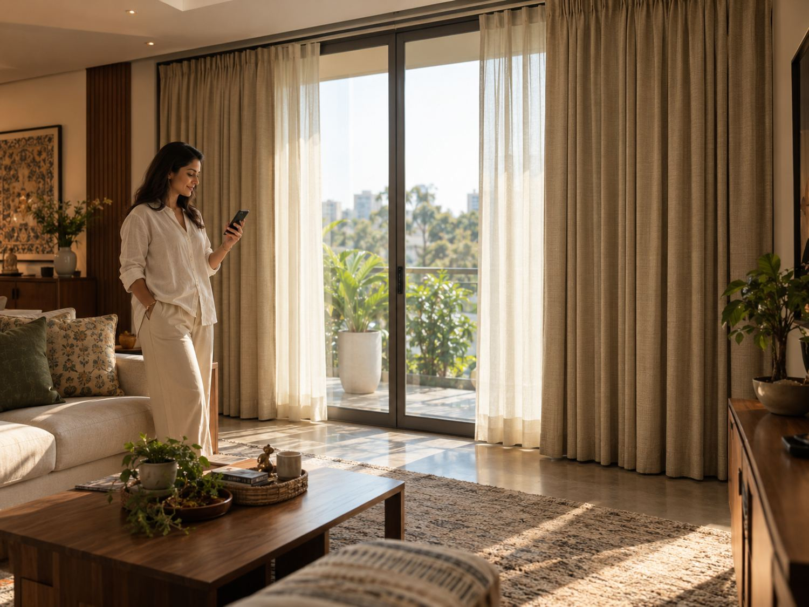

Motorised curtains & blinds for your Mysore home.
Open, close and schedule your curtains or blinds with effortless control. Designed for convenience without compromising the room.
TALK TO US →
Open your curtains without leaving the sofa.
A tap on your phone is all it takes — no cords to reach for, no heavy panels to pull, just a smooth, quiet motor doing the work.
Watch it glide open, hands-free.
No pulling, no reaching — just a smooth, quiet motor taking a curtain from fully closed to fully open on its own.
Smart control
Use remote control, app-based control or compatible smart-home systems where appropriate.
Quiet operation
Designed to move smoothly and discreetly, keeping attention on the room—not the mechanism.
Clean design
Motorisation integrates into a considered window treatment rather than feeling like an add-on.
Motorisation pairs beautifully with either curtains or blinds — browse the full range and add motorised control to any style you choose.
Choosing blinds for a child's room? Cordless or motorised is safer than a traditional pull cord — see our bedroom window coverings guide.
Motorised curtains and blinds for Mysore homes.
Ask us about motorised curtains and blinds for your Mysore home.
BOOK YOUR HOME VISIT →Free consultation · At your home · No obligation